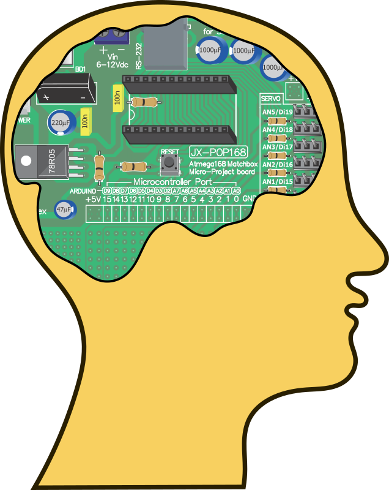
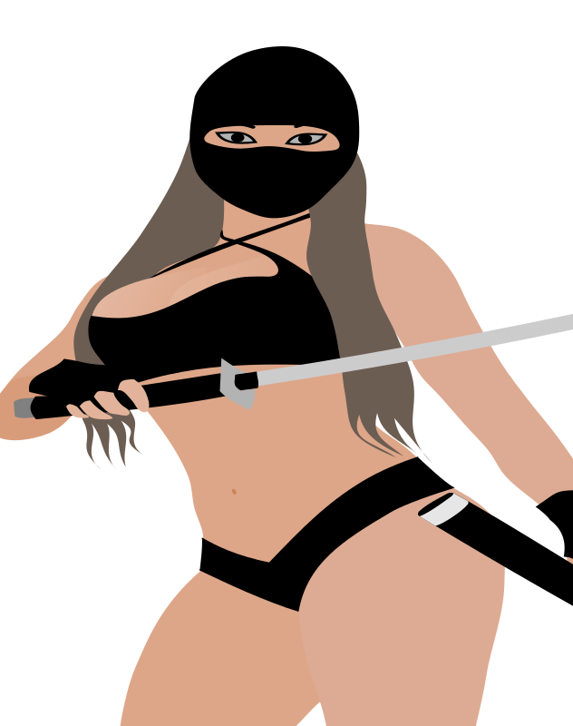

Live DevLog
| 20 Nov 2018 |
| 21:59:45 | BACKUP |  running running |
| 21:59:17 | UNIX | Unix must stop asking me permission for each Mac crap file |
| 21:57:12 | C# |  Code Synchronsation Code Synchronsation |
| 21:55:31 | TODO |  I also need to make sure the autoprefix countdown does properly save when asked for. I also need to make sure the autoprefix countdown does properly save when asked for. |
| 21:55:12 | TODO |  I do need to put this into the prefix tab, but that comes later... I do need to put this into the prefix tab, but that comes later... |
| 21:54:25 | FIXED |  It appears to be working now! It appears to be working now! |
| 21:51:42 | SOLVED |  GOTCHA! GOTCHA! |
| 21:49:43 | DEBUG |  Maybe THIS will get me some answers (I hope!) Maybe THIS will get me some answers (I hope!) |
| 21:49:29 | BUG |  Okay, so everything is 0? Why Okay, so everything is 0? Why |
| 21:47:50 | DEBUG | Debug data to the console (I didn't wanna go down this road, but I guess I have to) :( |
| 21:44:43 | BUG | ALL prefixes are always added no matter if they should |
| 21:42:40 | FIXED | I fixed this (of course!) |
| 21:41:44 | STUPIDITY |  Ah...... So THAT is the reason..... Moron! Ah...... So THAT is the reason..... Moron! |
| 21:40:49 | BUG | No crashes, but all definitions are rejected due to no object creation... How come? |
| 21:40:09 | NOTE |  All I can do (for now) is check if stuff doesn't crash... Actual prefixing is harder to do, but... Ya never know! All I can do (for now) is check if stuff doesn't crash... Actual prefixing is harder to do, but... Ya never know! |
| 21:38:33 | C# | Prefix announcement when loading (All I can do to debug things (for now). |
| 21:37:13 | C# | Oops... I forgot to update the internal library.... Well, I took care of that now! |
| 21:35:49 | C# | Loader prefix settings |
| 21:27:56 | C# | If the prefix list is not available when loading a project one will be created.
This is just crash prevention.... Nothing more! |
| 21:23:14 | TECHNO |  (If the project loader could be arhsed to parse it, but that is not yet the case) :P (If the project loader could be arhsed to parse it, but that is not yet the case) :P |
| 21:22:55 | C# | Prefixes should now be handled |
| 21:19:43 | OFFTOPIC |  (Then again, what does do what it should on computers since 1995?) (Then again, what does do what it should on computers since 1995?) |
| 21:19:11 | FAILURE |  A force quit refused to do what it should.... A force quit refused to do what it should.... |
| 21:19:02 | C# | Marker |
| 21:16:37 | C# | Prefixes added to Devlog project class |
| 21:15:20 | CONFIRMED |  History works History works |
| 21:14:15 | C# | Commands entered will be added to this history |
| 21:12:09 | C# | Command history list |
| 21:07:25 | GITHUB |  Another hidden message will appear eventually! Another hidden message will appear eventually! |
| 21:03:02 | NOTE | It goes without saying that the system itself doesn't yet work.... right? |
| 21:02:47 | C# | Class created for handling the devlog auto-prefixes.... |
| 20:52:31 | TODO | Natural break |
| 20:50:40 | SITE |  Temporary Devlog recompilation Temporary Devlog recompilation |
| 20:50:02 | C# | Temporary code synchronisation |
| 20:45:37 | STATUS |  Of couirse, now I am to the point that I can do level 30-40.... I've not yet fully decided, but the chance is high that I will not fill all 100 levels of the Black Tower... The joke has worked, and it's only getting annoying now... However this is not yet a final decission. Of couirse, now I am to the point that I can do level 30-40.... I've not yet fully decided, but the chance is high that I will not fill all 100 levels of the Black Tower... The joke has worked, and it's only getting annoying now... However this is not yet a final decission. |
| 20:32:07 | ANNOUNCEMENT | ZIGGO INTERNET NEVER NO MORE! NOOIT MEER! JAMAIS!!!! |
| 20:19:38 | CONFIRMED | that works the way it's intended |
| 20:11:52 | FIXED | Dirty fix to prevent crashes when you save during a Level Up sequence |
| 20:06:22 | JUDGMENT |  This is satisfactory This is satisfactory |
| 19:56:17 | TEST |  Take Three! Take Three! |
| 19:56:02 | NERF |  Troll's HP halved.... This simply took too long! Troll's HP halved.... This simply took too long! |
| 19:53:48 | DEBUG | HP overview for debugging purposes |
| 19:50:48 | FIXED | System Typo |
| 19:39:37 | TEST | Take TWO! |
| 19:39:23 | NOTE | (of course, one can never be 100% sure). |
| 19:39:02 | FIXED | I hope this fixes the database so this issue never happens again! |
| 19:35:27 | FIXED | Manual action fix |
| 19:30:14 | HUH |  Why doesn't it load an ability when it clearly does exist? Why doesn't it load an ability when it clearly does exist? |
| 19:24:11 | TEST | Take ONE! |
| 19:24:05 | STATUS | Well I do need to get things on the roll now, I guess... Everything SHOULD work, at least! |
| 19:23:22 | LINK |  Linked everything together Linked everything together |
| 19:22:44 | MAP |  Troll placed in the dungeon... Though you ought to know! Troll placed in the dungeon... Though you ought to know! |
| 19:15:37 | NOTE | (Of course, all computers have is AS (artificial stupidity) and since this boss is a troll, this is even more true than for any other enemy, I suppose). |
| 19:15:03 | AI | Scripted out the Troll AI |
| 19:10:01 | ABILITY |   Regeneration (It's a troll after all) Regeneration (It's a troll after all) |
| 19:05:47 | BOSS | Troll |
| 19:02:46 | FIXED | Broken picture reference |
| 18:59:04 | RYANNA |  Project file updated Project file updated |
| 18:58:14 | ART |  Troll Troll |
| 18:53:00 | PASCAL |  I do need some documentation about Pascal to get on with my experiments there, however due to my lack of internet. I do need some documentation about Pascal to get on with my experiments there, however due to my lack of internet. |
| 16:59:01 | TEST | Hopefully this test will confirm this has indeed been fixed |
| 16:58:22 | SOLVED | I think I found it |
| 16:56:47 | DUMP | !!FATAL ERROR!!!
Error
jcr6.lua:77: Entry not found
Traceback
[string "Script/Subs/Error.lua"]:59: in function <[string "Script/Subs/Error.lua"]:24>
[C]: in function 'assert'
jcr6.lua:77: in function 'jassert'
jcr6.lua:259: in function 'JCR_B'
jcr6.lua:356: in function 'JCR_D'
[string "Script/Subs/boxtext.lua"]:258: in function 'RunBoxText'
[string "Script/Subs/boxtext.lua"]:297: in function 'SerialBoxText'
[string "Script/Subs/headers.h.rel/boxtext_headers.lua"]:30: in function 'SerialBoxText'
[string "Script/Subs/headers.h.rel/boxtext_headers.lua"]:34: in function 'MapText'
[string "Script/Maps/Script/DUNG_BLACKTOWER.lua"]:181: in function <[string "Script/Maps/Script/DUNG_BLACKTOWER.lua"]:179>
[string "Script/Flows/field.rel/field.lua"]:490: in function 'odraw'
[string "Libs/killcallback.rel/kcb.lua"]:77: in function 'draw'
[C]: in function 'xpcall'
|
| 16:55:57 | INVESTIGATION |  Aha.... According to my source code the proper information was given, it's just that an empty string was requested and yeah, that can only result into an error.... of course the question is... How could that empty string be asked for? Aha.... According to my source code the proper information was given, it's just that an empty string was requested and yeah, that can only result into an error.... of course the question is... How could that empty string be asked for? |
| 16:54:17 | BUG | An error pops up, but it's too vague to properly act upon... |
| 16:49:22 | FAILURE | Of course you realize that I am about to stick up my middle finger to Ziggo and that they just lost me as a customer as I am working to get my internet and stuff elsewhere... |
| 16:48:24 | GITHUB | I did put stuff in a commit, but as always I can't push until Ziggo sees the error of its ways |
| 16:46:23 | TEST | Let's first test the scenario on floor #029 |
| 16:46:10 | MAP | A few things for floor #030, but that is not yet finished |
| 16:45:55 | LINK | And linked it all together |
| 16:45:46 | SCRIPT |  Scripted stuff out Scripted stuff out |
| 16:37:54 | SCENARIO |  checkup checkup |
| 16:33:37 | LUA |  Giant code refreshing Giant code refreshing |
| 16:32:24 | PASCAL | A few experiments |
| 16:27:00 | MAP | Configuration of objects in order to set things right for the event to come! |
| 16:23:06 | COSMETIC |  fine tuning fine tuning |
| 16:21:51 | ART | Faint |
| 16:14:53 | DONE |  Prepared the debug position of the game so I can put in the shouting man event, without too much trouble. Prepared the debug position of the game so I can put in the shouting man event, without too much trouble. |
| 15:32:58 | FIXED | Floor #029 was supposed to be without enemies |
| 15:32:29 | NERF | I made some warding gates not throw you back as far as they should... Of course, this nerf does NOT affect the hard mode (HA HA!) |
| 13:54:43 | DONE | I SURVIVED! |
| 12:47:05 | TODO | And now I'm going to risk my life, for the purpose of having something brought to the repair man and unfortunatly challenging death is the only way to do it... So if you never hear from me again after this was posted, it's safe to assume I died... If I survived, you'll be the first to know, and that's the only promise I can make! |
| 12:38:27 | BACKUP | In the meantime I'll start the backup |
| 12:31:42 | STATUS | I first need to eat first, before I do something serious |
| 12:31:04 | SYSTEM |  After seeing that a completely different game also lagged, I could only conclude my mac was to blame and thus I reset the system and now everything is fast again.... Spooky! After seeing that a completely different game also lagged, I could only conclude my mac was to blame and thus I reset the system and now everything is fast again.... Spooky! |
| 10:33:12 | SYSTEM | I'm gonna reboot the system, and let's see if that solves anything at all |
| 10:32:32 | FAILURE | Okay, when Star Story starts to lag as well, i can sefely state that something else is the matter... The question is WHAT! |
| 19 Nov 2018 |
| 21:50:23 | STATUS | Well I am very very tired now... I fear I'll have to sort out the mysterious lag issue another time.... |
| 21:40:53 | CONFIRMED | Well, at least as far as I can test that for now that is.... |
| 21:38:31 | TEST | Well, let's test out if at least the scenario loader operates the way it should now! |
| 21:38:08 | ALPHA |  These fixes are too important not to update the alpha for, however thanks to an incompetent ISP that is now impossible... (THANKS) These fixes are too important not to update the alpha for, however thanks to an incompetent ISP that is now impossible... (THANKS) |
| 21:37:37 | FIXED | I fixed that (I hope) |
| 21:37:20 | COCKROACH |  Fix leading to "nil" Fix leading to "nil" |
| 21:33:59 | TECHNO | (Of course, that does not explain why the game is slowing down). |
| 21:33:33 | DONE | At least I've set the scenario loader to ignore fields without values... This should be a definite fix to the font issue and also to the "!" appearing alone in the narration boxes at the start of the game! |
| 21:30:37 | TECHNO | What is causing this trouble then is a mystery to me though... NOTHING could cause this, or nothing OBVIOUS at least, so this is guessing work.... |
| 21:29:23 | TECHNO | And what I wanted to test was if the lag persisted even when I ran a game that didn't use the internet, and that is the case, so that at least appears to confirm that the lack of internet is not the blame for this.... |
| 21:28:34 | FIXED | The font issue's fixed now |
| 21:25:55 | TECHNO | Please note that these font issues crash the game, keeping me from testinging my primary issue... :-/ |
| 21:25:11 | NOTAFIXBUTATLEASTNOCRASHSESNOW | Ah, another part of this routine as also acting up... Hopefully this will silence that issue! |
| 21:23:05 | NOTE | Also good to see that the save game routine didn't slow down... ANother indicator the game itself is to blame somehow, but I fear this is gonna be looking for a needle in a haystack |
| 21:19:32 | NOTAFIXBUTATLEASTNOCRASHSESNOW | I've just set to ignore the alternate font routine for now.... It's the best for everybody, and I don't intend to work with alternate fonts anyway. |
| 21:18:39 | SITE | Added tag NOTAFIXBUTATLEASTNOCRASHSESNOW |
| 21:16:16 | TECHNO |  The short building times indicate there's nothing wrong with my Mac's CPU speed, so that the lagging is really caused by the game itself The short building times indicate there's nothing wrong with my Mac's CPU speed, so that the lagging is really caused by the game itself |
| 21:15:37 | DEBUG | I've adapted a line to see what could cause this mess to happen |
| 21:14:35 | COCKROACH | Font issue |
| 21:11:33 | DONE | I've set out a few things that spook up the boxtext routine thanks to the new BoxText editor and a few parsing issues coming along the way. |
| 20:54:51 | CHECKED |  Nothing in the log gives a clear indication of the source of this problem.... Nothing in the log gives a clear indication of the source of this problem.... |
| 20:53:52 | NOTE | Although the game is having a big lag at this time, or rather it runs extremely slow.... I doubt this internet issue if mine has anything to do with it (if so we got a bug as that should NOT be possible).... |
| 20:52:56 | FIXED | This has been fixed |
| 20:49:14 | TEST | And let's see if this fixes the issue. |
| 20:49:04 | SCRIPT | So I have scripted around this issue |
| 20:48:27 | TECHNO | The (fake) "OOP" processing in Lua is not really designed for pcall, but since the OOP in Lua is fake, there are pretty dirty ways around this matter, so doncha worry. |
| 20:40:55 | DUMP | !!FATAL ERROR!!!
Error
[string "Libs/json.rel/json.lua"]:383: nil passed to JSON:decode() ("host not found")
Traceback
[string "Script/Subs/Error.lua"]:59: in function <[string "Script/Subs/Error.lua"]:24>
[C]: in function 'assert'
[string "Libs/json.rel/json.lua"]:383: in function 'onDecodeOfNilError'
[string "Libs/json.rel/json.lua"]:644: in function 'decode'
[string "Libs/gjapi.rel/gjapi.lua"]:115: in function 'users_auth'
[string "script/Flows/startgame.lua"]:153: in function 'f'
[string "script/Flows/startgame.lua"]:185: in function 'nothing'
[string "Libs/killcallback.rel/kcb.lua"]:89: in function 'update'
[C]: in function 'xpcall'
This can be a serious issue. Since I neither wrote the Game Jolt API nor the JSON parser myself... Of course, I can easily resort to a dirty solution... Since an error is thrown I can try to void this with pcall... |
| 20:38:02 | BUG | I see that the lack of an internet connection is lethal tothe Game Jolt API, as it appears to be unable to detect the host as not been found sending nil to the JSON parser |
| 18 Nov 2018 |
| 09:31:03 | STATUS | And leave all my programming work be for today.... |
| 09:30:38 | BACKUP | What I can (and will do is run an extra backup now) |
| 09:30:04 | CHECKED | I've checked my to do list.... unfortunately all items are too much work to do on a day like today |
| 08:58:42 | STATUS | On Sundays I always expect people I don't have much time today... |
| 08:54:52 | FIXED | Pagination growth bug |
| 17 Nov 2018 |
| 21:45:55 | STATUS | Calling it a day! |
| 21:45:01 | BADREMARK |  Hey, I gotta improvide, mind you Hey, I gotta improvide, mind you |
| 21:44:55 | SITE | Added tag BADREMARK |
| 21:44:25 | TODO | I do not have access to my planboard, no can I reach my issue tracker, so I've created a temporary markdown file with my to-do notes... |
| 21:41:40 | GITHUB | I cannot push stuff (yet), but that's no bother, since Git supports stacking up commits for later pushing. I hope I can push them soon, and if not, well, those commits can wait until I got internet again |
| 21:38:11 | BACKUP | Running |
| 21:33:34 | REMOVED |  Test records from DevLog Test records from DevLog |
| 21:33:13 | VERIFIED |  Ah, autoupdate for entries DOES work Ah, autoupdate for entries DOES work |
| 21:27:28 | CONFIRMED | Autopush except for the fact that git is not yet called, but that's not a problem yet |
| 21:26:23 | FIXED | Fixed that the dirty way |
| 21:24:28 | HUH | I don't understand why this happens, but let's try this... :-/ |
| 21:22:06 | BUG | Hmmm... The tag recognizer has gone haywire |
| 21:19:33 | C# | although the push feature is yet absent, writing the autopush was already possible, although an error will be thrown when the autopush goes off (it will not crash the utility, though) |
| 21:14:15 | COSMETIC | HintRule on entry list activated... Looks better |
| 21:12:53 | STATUS | the time is almost there to deprecate this old Devlog tool, but there are a few more things to be done in C# before that joyful event takes place... The autoprefixes is one, and the autopush is the other (not to mention pushing itself, but that's not my biggest issue) |
| 21:10:34 | STATUS | But it works now, so I think I deserve a cup of coffee |
| 21:08:01 | STATUS | Frustration level critical! |
| 21:07:35 | CONFIRMED | Ok, that worked.... Yeah, this is a harsher crime than trying to teach somebody the Cobol Programming Language, but what works that works, so SHUT THE FUCK UP! |
| 21:06:25 | EXPERIMENT |  Let's resort to Dirty Code Straight From Hell! Let's resort to Dirty Code Straight From Hell! |
| 21:06:11 | COCKROACH | No! |
| 21:04:02 | FIXED | Now? |
| 21:03:55 | COCKROACH | Or not |
| 21:02:18 | FIXED | A dirty fix on the C# icon... I know I could do better than that, but without the internet it's harder to look things up, and i don't feel like trying too much... |
| 21:01:19 | STUPIDITY | And let's not mention my spelling when I'm tired |
| 21:01:03 | STUPIDITY | The Unix Prompt command replay can sometimes work out for the wrost |
| 20:57:00 | CONFIRMED | It works... for now |
| 20:54:31 | GENERATION |  And the rest will be re-generated anyway And the rest will be re-generated anyway |
| 20:54:05 | RECOVERED |  Part of the stuff is recovered Part of the stuff is recovered |
| 20:52:07 | FAILURE | Oops.... It appears unix misunderstood me and deleted some data it wasn't allowed to delete |
| 20:47:12 | JUDGMENT | Looks cool, except for the fact the C# icon isn't well supported |
| 20:46:00 | FIXED | Added a trim effect as I got false output generated |
| 20:43:02 | FIXED | Another |
| 20:42:45 | FIXED | parse error |
| 20:42:05 | C# | I Set the preprocessor to export everything to the "real" site output (for now), as the filenames are a slight different, that will mean two versions of the DevLog will temporarily live next to each other. |
| 20:40:40 | NOTE | The amateur icon management in the TFT devlog may (very likely will) cause some issues with the layout, but since that is a finished project, that Devlog is less important, and it no big issues arise there, that DevLog may soon disappear anyway, so WHAT ARE WE MOANING ABOUT? |
| 20:38:54 | FIXED | That looks a lot better |
| 20:36:49 | NERF | Brought that back to half, and let's see if that produces a better result ;) |
| 20:34:51 | JUDGMENT | Looks cool, but default size is too big |
| 20:33:37 | ENHANCEMENT |  And this DevLog only supported png, the C# version will support png, svg, gif and jpg And this DevLog only supported png, the C# version will support png, svg, gif and jpg |
| 20:33:15 | C# | Icon addition |
| 20:25:06 | JUDGMENT | BETTER! |
| 20:24:06 | COSMETIC | More fine tuning |
| 20:22:59 | FIXED | The damage it did |
| 20:22:49 | BUG | I HATE intelligent software |
| 20:21:41 | FIXED | Parse error fixed |
| 20:21:35 | BUG | YIKES! |
| 20:21:00 | EXPERIMENT | Let's FORCE this then... |
| 20:19:58 | BUG | the Autoscroll feature is NOT working, and I wonder why! |
| 20:19:29 | CONFIRMED | The Icons are indeed missing, but that is a concern for later |
| 20:18:54 | TEST | I've tested this with the output of this very DevLog |
| 20:15:57 | DEBUG | Let's expand this issue a little |
| 20:15:01 | HUH | Template not loaded? |
| 20:13:17 | NOTE | (Icons are not yet supported, so they will not appear in my test output, but of course, they will in the REAL output). |
| 20:12:51 | SITE | I've done a few adaptions to the config of this very DevLog to test the output |
| 20:10:31 | JUDGMENT | Okay, that is MUCH better.... of course.... I cannot yet see everything in its full glory as the entire devlog refers to pictures linked from the web (from which I'm currently disconnected, thanks to some assholes who didn't keep their bookkeeping in order and provided me with wrong information), but as far as I can currenly judge, this looks the way it should. |
| 20:07:27 | COSMETIC | Set up a certain HTML style.... This is done for the TFT REVAMP devlog that had very primitive icon usage as icon support wasn't there in the original version of DevLog |
| 20:02:52 | FIXED | Top pagination too low number |
| 20:00:58 | FIXED | That idiocy |
| 20:00:49 | STUPIDITY | IDIOT! |
| 19:59:26 | FIXED | Pagination line got bigger and longer each page by repeating old links |
| 19:57:16 | FIXED | Pagination always highlighted page 1 |
| 19:54:29 | FIXED | Layout bug from page 2 onward |
| 19:53:00 | FIXED | Pagination line layout fixed |
| 19:36:49 | FIXED | Generator pagination bug |
| 19:28:21 | FIXED | If the directory does not exist, create it |
| 19:26:57 | DUMP | Exception in Gtk# callback delegate Note: Applications can use GLib.ExceptionManager.UnhandledException to handle the exception. System.Reflection.TargetInvocationException: Exception has been thrown by the target of an invocation. ---> System.IO.DirectoryNotFoundException: Could not find a part of the path "/Users/Rachel/Projects/VisualStudio/DevLog/MKL_TempExport/TFT_DevLog_Page_1.html". at System.IO.FileStream..ctor (System.String path, System.IO.FileMode mode, System.IO.FileAccess access, System.IO.FileShare share, System.Int32 bufferSize, System.Boolean anonymous, System.IO.FileOptions options) [0x0015e] in /Users/builder/jenkins/workspace/build-package-osx-mono/2018-02/external/bockbuild/builds/mono-x64/mcs/class/corlib/System.IO/FileStream.cs:223 at System.IO.FileStream..ctor (System.String path, System.IO.FileMode mode, System.IO.FileAccess access, System.IO.FileShare share) [0x00000] in /Users/builder/jenkins/workspace/build-package-osx-mono/2018-02/external/bockbuild/builds/mono-x64/mcs/class/corlib/System.IO/FileStream.cs:91 at (wrapper remoting-invoke-with-check) System.IO.FileStream..ctor(string,System.IO.FileMode,System.IO.FileAccess,System.IO.FileShare) at System.IO.File.OpenWrite (System.String path) [0x00000] in /Users/builder/jenkins/workspace/build-package-osx-mono/2018-02/external/bockbuild/builds/mono-x64/mcs/class/corlib/System.IO/File.cs:360 at TrickyUnits.QOpen.WriteFile (System.String filename, System.Byte EndiancCode) [0x00014] in /Users/Rachel/Projects/VisualStudio/TrickyUnits/qstream.cs:191 at TrickyUnits.QOpen.SaveString (System.String filename, System.String thestring) [0x00001] in /Users/Rachel/Projects/VisualStudio/TrickyUnits/qstream.cs:200 at Devlog.Export.Gen () [0x0026b] in /Users/Rachel/Projects/VisualStudio/Devlog/Export.cs:86 at Devlog.CommandClass+<>c. b__11_6 (System.String ) [0x00001] in /Users/Rachel/Projects/VisualStudio/Devlog/Command.cs:125
at Devlog.CommandClass.DoCommand (System.String command) [0x0006d] in /Users/Rachel/Projects/VisualStudio/Devlog/Command.cs:145
at Devlog.GUI.AndACTION (System.Object sender, System.EventArgs a) [0x00001] in /Users/Rachel/Projects/VisualStudio/Devlog/GUI.cs:62
at (wrapper managed-to-native) System.Reflection.MonoMethod.InternalInvoke(System.Reflection.MonoMethod,object,object[],System.Exception&)
at System.Reflection.MonoMethod.Invoke (System.Object obj, System.Reflection.BindingFlags invokeAttr, System.Reflection.Binder binder, System.Object[] parameters, System.Globalization.CultureInfo culture) [0x00032] in /Users/builder/jenkins/workspace/build-package-osx-mono/2018-02/external/bockbuild/builds/mono-x64/mcs/class/corlib/System.Reflection/MonoMethod.cs:305
--- End of inner exception stack trace ---
at System.Reflection.MonoMethod.Invoke (System.Object obj, System.Reflection.BindingFlags invokeAttr, System.Reflection.Binder binder, System.Object[] parameters, System.Globalization.CultureInfo culture) [0x00043] in /Users/builder/jenkins/workspace/build-package-osx-mono/2018-02/external/bockbuild/builds/mono-x64/mcs/class/corlib/System.Reflection/MonoMethod.cs:313
at System.Reflection.MethodBase.Invoke (System.Object obj, System.Object[] parameters) [0x00000] in /Users/builder/jenkins/workspace/build-package-osx-mono/2018-02/external/bockbuild/builds/mono-x64/mcs/class/referencesource/mscorlib/system/reflection/methodbase.cs:229
at System.Delegate.DynamicInvokeImpl (System.Object[] args) [0x000e1] in /Users/builder/jenkins/workspace/build-package-osx-mono/2018-02/external/bockbuild/builds/mono-x64/mcs/class/corlib/System/Delegate.cs:463
at System.MulticastDelegate.DynamicInvokeImpl (System.Object[] args) [0x00008] in /Users/builder/jenkins/workspace/build-package-osx-mono/2018-02/external/bockbuild/builds/mono-x64/mcs/class/corlib/System/MulticastDelegate.cs:67
at System.Delegate.DynamicInvoke (System.Object[] args) [0x00000] in /Users/builder/jenkins/workspace/build-package-osx-mono/2018-02/external/bockbuild/builds/mono-x64/mcs/class/corlib/System/Delegate.cs:408
at GLib.Signal.ClosureInvokedCB (System.Object o, GLib.ClosureInvokedArgs args) [0x0007f] in /Users/builder/jenkins/workspace/build-package-osx-mono/2018-02/external/bockbuild/builds/gtk-sharp-None/glib/Signal.cs:207
at GLib.Signal+SignalClosure.Invoke (GLib.ClosureInvokedArgs args) [0x00019] in /Users/builder/jenkins/workspace/build-package-osx-mono/2018-02/external/bockbuild/builds/gtk-sharp-None/glib/SignalClosure.cs:114
at GLib.Signal+SignalClosure.MarshalCallback (System.IntPtr raw_closure, GLib.Value* return_val, System.UInt32 n_param_vals, GLib.Value* param_values, System.IntPtr invocation_hint, System.IntPtr marshal_data) [0x00053] in /Users/builder/jenkins/workspace/build-package-osx-mono/2018-02/external/bockbuild/builds/gtk-sharp-None/glib/SignalClosure.cs:143
at GLib.ExceptionManager.RaiseUnhandledException (System.Exception e, System.Boolean is_terminal) [0x0003b] in /Users/builder/jenkins/workspace/build-package-osx-mono/2018-02/external/bockbuild/builds/gtk-sharp-None/glib/ExceptionManager.cs:58
at GLib.Signal+SignalClosure.MarshalCallback (System.IntPtr raw_closure, GLib.Value* return_val, System.UInt32 n_param_vals, GLib.Value* param_values, System.IntPtr invocation_hint, System.IntPtr marshal_data) [0x0013d] in /Users/builder/jenkins/workspace/build-package-osx-mono/2018-02/external/bockbuild/builds/gtk-sharp-None/glib/SignalClosure.cs:164
at Gtk.Application.gtk_main () [0x00000] in <13dfc6c534074eb08a8f382a81e605d5>:0
at Gtk.Application.Run () [0x00001] in /Users/builder/jenkins/workspace/build-package-osx-mono/2018-02/external/bockbuild/builds/gtk-sharp-None/gtk/Application.cs:145
at Devlog.GUI.Start () [0x0000c] in /Users/Rachel/Projects/VisualStudio/Devlog/GUI.cs:395
at Devlog.MainClass.Main (System.String[] args) [0x00019] in /Users/Rachel/Projects/VisualStudio/Devlog/Devlog.cs:104
That's not looking good! |
| 19:25:18 | DEBUG | I need to see why Devlog refuses to load the template |
| 19:25:04 | C# | No Project Protection |
| 19:22:27 | TEST | Of course I first need to put this to the test... :-/ |
| 19:22:16 | C# | HTML export written |
| 17:59:56 | TECHNO | I love pre-processors |
| 17:59:48 | C# | Temp dir and official dir set |
| 17:52:52 | PLAN |  I am planning to put in an auto-scroll to prevent large pages (as you may see now (or on the previous page depending on the current pagination status)) to become larger than the screen. I am planning to put in an auto-scroll to prevent large pages (as you may see now (or on the previous page depending on the current pagination status)) to become larger than the screen. |
| 17:51:57 | DONE | And fixing myself some coffee for now... |
| 17:51:47 | DONE | Spiced my chicken for dinner tonight |
| 17:45:58 | TECHNO | The advantage of having to come with a binary based indexed database for DevLog is that creating an export routine for it is easier, and will likely also be faster than the BlitzMax version ever was... Although I have to admit that the original Blitzmax version was a rushed project. |
| 17:38:38 | C# | About |
| 17:35:27 | C# | Export class created |
| 17:27:01 | C# | General config added |
| 17:06:18 | C# | For now I'll stick with just copying purecode to textcode... The actual parser will be implemented later |